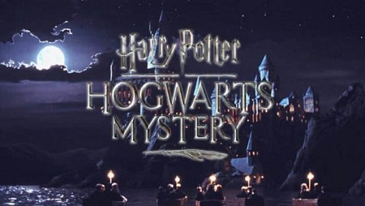
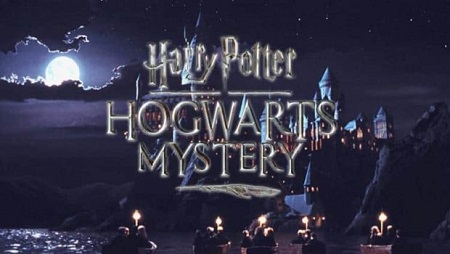
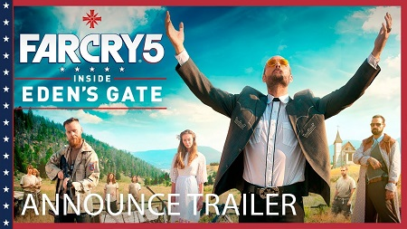
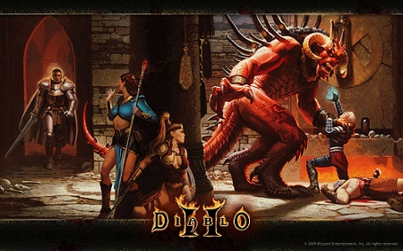
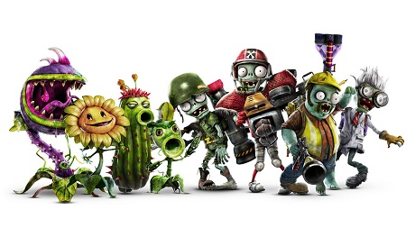

Nuevo trailer de Harry Potter: Hogwarts Mystery, el juego para spartphones

El estudio Jam City quiere que vayas a Hogwarts y te conviertas en un excelente mago. El juego para...Leer más


Sí, tal como el famoso y veloz personaje del erizo azul creado por SEGA.

Este aspecto fue fundamental para la experiencia de juego que fue muy polémica a mediados de los 90's

Se llamaría: Prince id Persia Assasin’s. Al final Ubisoft decidió que fuera un juego totalmente nuevo..

Dicho lugar fue abandonado por un incendio de una mina carbón que ocurrió en 1962. Actualmente sólo habitan 7 personas el lugar y por eso se
le conoce como pueblo fantasma.

¿Y tú qué nombre de un personaje le pondría a tu hijo o hija?

El estudio Jam City quiere que vayas a Hogwarts y te conviertas en un excelente mago. El juego para...Leer más

Ubisoft lanzará un corto live-action que sucede previo a los eventos de Far Cry 5. Este corto, de nombre Inside...Leer más

Blizzard Entertainment compartió unos mensajes muy misteriosos en su cuenta oficial de Twitter, incluso dando pistas de que Diablo...Leer más
Anoche una usuaria de Reddit, compartió una actualización extraña en su Xbox, donde su apellido aparecía justo a lado...
Leer más

La existencia de Plants vs.Zombies: Garden Warfare 3 ha sido filtrada a través de un cómic de la...Leer más